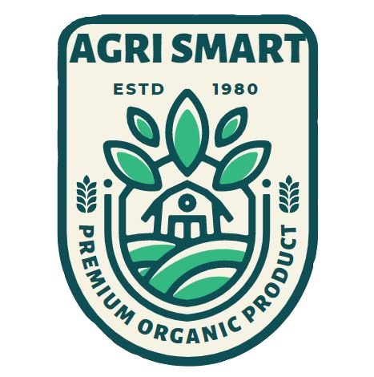

AGRI SMART
Agri smart Limited is one of India’s leading
agri-input company and is listed by Forbes Magazine
in the category of
“200 Best under A Billion
Companies in Asia Pacific”.
The Company is listed with Bombay Stock Exchange
and
NationalStock Exchange of India.
Agro has been awarded Company of the Year
(Agro Chemical Category) by
Federation of
Indian Chambers of Commerce and Industry
(FICCI) in 10th Biennial International
Exhibition and
Conference –India Chem 2018
and has been bestowed with many awards and
recognitions from time to time.
The Company has recently been recognized as
“Great Place to Work for the year 2018-19”.
Agro has Pan-India presence through its marketing
offices in all major states across India.
The 3 manufacturing units
with 39 warehouses and
network of over 8 branch offices across the Indian
geography caters to 6,500 distributors & approximately
75,000 dealers. Agro’s workforce with more than 1,000
techno,commercial staff, supported by a strong R&D division
and a robust distribution network helps Company to reach
out to approximately 10 million Indian farmers with its products
and services. Agro’s R&D division has world class NABL Accredited
Laboratories and has international collaborations with the world’s seven
leading agri-input companies from US, Japan and Europe which helps Agro
to introduce the latest technology in Indian farmlands.